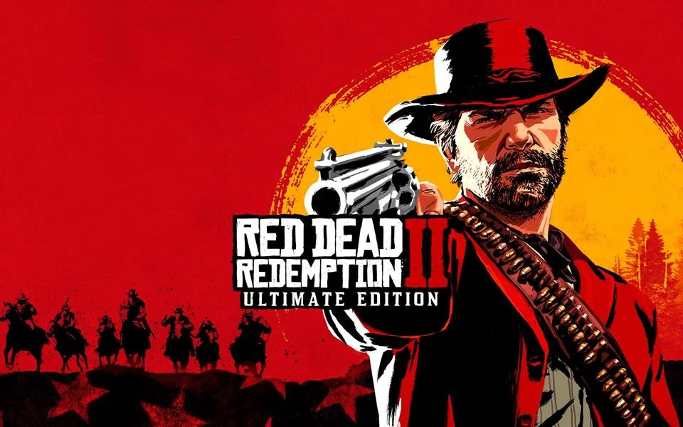

Quem Somos e Qual o Nosso Propósito
O Red Dead Hub Brasil nasceu com o objective de ser o ponto de encontro definitivo e a maior central de guias para os jogadores brasileiros de Red Dead Redemption 2. Nosso portal funciona como uma comunidade ativa onde reunimos estratégias minuciosas, desvendamos segredos do mapa e ajudamos desde pistoleiros iniciantes até os cowboys mais experientes a dominarem as complexas mecânicas desse universo.

O Fim da Era dos Foragidos
Red Dead Redemption 2 é uma obra-prima de ação e aventura em mundo aberto, desenvolvida pela Rockstar Games e ambientada no ano de 1899 nos Estados Unidos. O enredo se passa no crepúsculo da era do Velho Oeste, um momento em que as forças da lei caçam as últimas gangues de fora da lei restantes. Aqueles que não se rendem ou não sucumbem são impiedosamente eliminados.
A narrativa acompanha a jornada de Arthur Morgan, um habilidoso e leal membro sênior da gangue Van der Linde. Após um assalto dar terrivelmente errado na cidade de Blackwater, a gangue é forçada a fugir pelas montanhas geladas, iniciando uma constante luta pela sobrevivência. Enquanto divisões internas profundas ameaçam despedaçar o grupo, Arthur precisa escolher entre seus próprios ideais e a lealdade ao homem que o criou, Dutch van der Linde.
Um Mundo Vivo e Imersivo
Exploração Sem Limites
O mapa abrange cinco estados fictícios dos EUA, apresentando desde picos nevados e florestas densas até pântanos perigosos e cidades em rápido crescimento industrial, como Saint Denis.
Ecossistema Detalhado
Com mais de 200 espécies de animais, aves e peixes, o mundo possui um ecossistema realista onde cada criatura se comporta de forma única, interagindo de forma direta com o meio ambiente e o jogador.
Interação Dinâmica
O sistema de Honra molda a forma como o mundo reage a Arthur. Suas decisões em missões, a forma como trata os cidadãos e suas ações diárias determinam se você será visto como um herói ou como um vilão.
Prepare-se para a Jornada
Sobreviver neste ecossistema exige conhecimento técnico, armas bem cuidadas e as estratégias certas. Acesse a nossa central de guias para dominar as mecânicas essenciais do jogo ou entre em contato para sugerir novos tópicos.